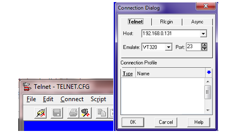
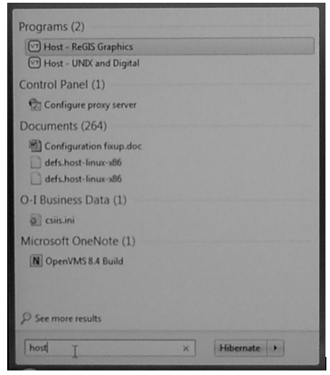
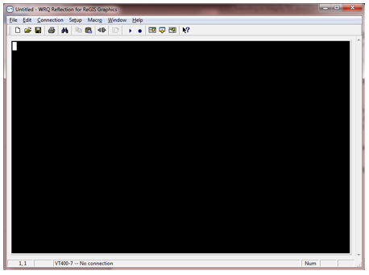
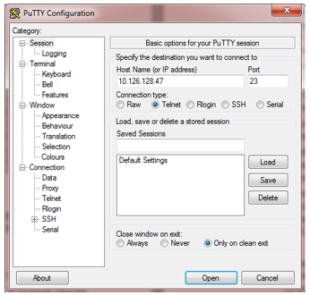
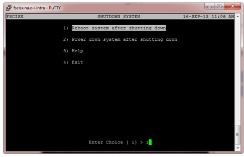
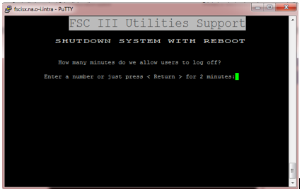

How to Reboot the PIC PRS FSC Integrity Server
Purpose and Application
This document describes how to correctly shutdown an Integrity Server FSC and reboot it again. Rebooting with this method avoids the risk of corrupting the data that the FSC uses and maintains for proper operation. The risk of data corruption caused by abrupt power shutdown of the Integrity Server is similar to the risk with Microsoft Windows.
Safety
 |
 |
Procedure
- Shutting down the FSC required logging onto the original FSC menus that have been part of the FSC since before the MOC program became the standard user interface. To log on to the menus, it is recommend that a network “telnet” session be established with the FSC. Telnet sessions can be made with the Reflection for Windows program, the Chameleon telnet program or the PuTTY telnet program. All of these are available from Run Advertised Programs.
- This procedure will describe the methods for connecting to the Integrity Server using a telnet program or Reflection for Windows in the “Connection with Telnet” section. If you do not get the results described when you do a Search Programs (step 1), the program you want will need to be installed first. The Global Service Desk can assist if you have not done this function.
- There are two methods of connecting to the Integrity Server over the network:
- Connecting to the same IP address as used for MOC and JES operations.
- This is simpler, but results in a “blind” shutdown and reboot where you cannot see when the shutdown is completed or when the reboot has completed.
- Connecting to the Management Port IP address.
- This is slightly more involved because the Management Port requires a login and then typing a command to connect to the Console where you then log in the same way as the first method.
- Connecting to the same IP address as used for MOC and JES operations.
- Connection with Telnet
-
Note:
Setting up the programs so that Backspace works as Delete is out of scope for this document. If a mistake is made in typing a password, just try again.
-
- Chameleon Method
- Click on the Windows Start button and type
telnet
in the Search Programs and Files
box. If the program is installed, you should see Telnet and ASCII
Terminal in the Programs list at the top of the popup window (Figure
1).
Figure 3. Figure 1 
- Click on the Windows Start button and type
telnet
in the Search Programs and Files
box. If the program is installed, you should see Telnet and ASCII
Terminal in the Programs list at the top of the popup window (Figure
1).
- Click on the program and the telnet window should appear
(Figure 2). Note:
The background color may be simply white by default.
Figure 4. Figure 2 
- Click the menu word Connect or the left-most icon button to
display the connection dialog window (Figure 3).
Figure 5. Figure 3 
- In the space titled “Host:”, type in the IP address you are going to use. The other two boxes should say “Emulate: VT320” and “Port: 23”.
- Click OK to start the connection. Some sort of announcement and prompt should appear for you to log in. See the Shutdown/Reboot Procedure for what to do next.
- Reflection for Windows Method
- Click on the Windows Start button and type
host
in the Search Programs and Files
box. If the program is installed, you should see Host – ReGIS Graphics
in the Programs list at the top of the popup window (Figure 4).
Figure 6. Figure 4 
- Click on the program and the Reflection window should appear (Figure 5).
Figure 7. Figure 5 
- Click the menu word Connection to display the connection dialog window (Figure 6).
Figure 8. Figure 6 
- In the space titled “Host/Service name:”, type in the IP address you are going to use.
- Click the Connect button to start the connection. Some sort of announcement and prompt should appear for you to log in. See the Shutdown/Reboot Procedure for what to do next.
- Click on the Windows Start button and type
host
in the Search Programs and Files
box. If the program is installed, you should see Host – ReGIS Graphics
in the Programs list at the top of the popup window (Figure 4).
- PuTTY Method
- Click on the Windows Start button and type
putty
in the Search Programs and Files
box. If the program is installed, you should see Telnet and ASCII
Terminal in the Programs list at the top of the popup window (Figure
7).
Figure 9. Figure 7 
- Click on the program and the Putty telnet window should appear (Figure 8).
Figure 10. Figure 8 
- In the space titled “Host Name (or IP address)”, type in the IP address you
are going to use. Change the Connection type to “Telnet” (Figure 9).
Figure 11. Figure 9 
- The settings can be saved by typing a name into the line under Saved Sessions and clicking the Save button. The next time that you start the program, click on the name that you created (which will appear in the window where the words Default Settings are shown). When the Load button is clicked on, you should be able to do the next step immediately.
- Click OK to start the connection. Some sort of announcement and prompt should appear for you to log in. See the Shutdown/Reboot Procedure for what to do next.
- Click on the Windows Start button and type
putty
in the Search Programs and Files
box. If the program is installed, you should see Telnet and ASCII
Terminal in the Programs list at the top of the popup window (Figure
7).
- Shutdown/Reboot Procedure
- If you have connected to the MOC/JES address, the following procedure will shut down or reboot the Integrity Server. If you connected instead to the Management Port, you should jump ahead to the Logging onto the Management Port procedure and then come back to this procedure after you are connected to the Console.
- Right after you make a connection to the FSC, there will be an announcement confirming that you are connected and then a prompt for a username.
- At the prompt for username, type in fsc in either upper or lower case letters and press the Enter key.
- The system will log you on and display the Space copyright information.
Eventually the main FSC menu will appear (Figure 10).
Figure 12. Figure 10 
- Type the number 4 or move the highlight with the arrow
keys to select the
Utilities
menu. Press
Enter to display the menu (Figure 11).
Figure 13. Figure 11 
- Type the number 10 or move the highlight to select
Shutdown/Reboot System.
Press
Enter to get the next menu (Figure 12).
Figure 14. Figure 12 
- Enter the number for the operation that you need to perform and press
Enter. The system will prompt for a Password.
Passwords are established by using the MOC utility for setting up user
privileges. The password used will require the necessary privilege to permit
doing a reboot or shutdown this way.
- Recommendation: Set up a special user account that is the only one having the privilege and provide it to personnel who are the most likely to be responsible for doing maintenance like this
- If the password is correct, the text will display to explain what the function will do and prompt you to confirm that this is your intention. Type Y to proceed or N to cancel.
- The procedure will next display a screen where you can choose how long to
delay the start of the shutdown (Figure 13). To start the shutdown immediately, type a
zero and then press Enter to
complete the question. This is an old option that types a warning on the screen
of other telnet sessions. If this were a combo system, it would alert the PIC
and PRS users that the system is about to shut down.
Figure 15. Figure 13 
- The procedure will provide one final opportunity to safely exit from the
procedure (Figure 14). If you answer
it to proceed, the shutdown will begin.
-
Note:
All Integrity systems will say that you are shutting down “PIC” even though it is an FSC only system.
Figure 16. Figure 14 
-
- There will be messages displayed as the process takes place. If this session is not connected to the Console, it will stop logging messages and after a time, it might disconnect. If you are doing the “blind” method, you will need to wait about five to ten minutes for the system to reboot. To check when it is ready, make the telnet program disconnect (if it did not by itself) and then try to connect. When the system has rebooted, you will be able to connect.
- When using the blind method, always wait 10 minutes after telling the system to shut down before turning off power. If the system has failed to reboot after 15 minutes, you can try powering off and back on to restart it, but it is likely that the failure to boot is a serious problem requiring technical assistance.
- Logging onto the Management Port
- When you connect to the Management Port IP address, the special computer that is
the Management Port will prompt you for “MP Login” (the username) and “MP
Password”. These are both case-sensitive, so be sure to type the
“O” in “Oper” so that it is capitalized.
- When the prompt “MP Login” appears, type Oper and press Enter (Figure 15).
- When the prompt “MP Password appears, type console and press Enter.
- If the login was successful, there will be a menu of Management Port
functions that are accessed by typing the two letter heading for the one
required (Figure 15).
Figure 17. Figure 15 
- When you connect to the Management Port IP address, the special computer that is
the Management Port will prompt you for “MP Login” (the username) and “MP
Password”. These are both case-sensitive, so be sure to type the
“O” in “Oper” so that it is capitalized.
- Type the letters CO (upper or lower case) and press Enter to connect to the console.
- There will now be three possible outcomes after you are connected to the Console:
- When you press Enter, the prompt for Username might come up just as in step 1 of the Shutdown/Reboot Procedure. If you get the Username prompt, simply follow the Shutdown/Reboot Procedure (page 8).
- When you press Enter, something results from the FSC menu already being logged on, or else someone left an administrative session running by accident. Follow the instructions in step 6.
- You can press Enter and a message will say that another session is already connected to the Console and the other session has control of the keyboard (don’t panic). Follow the instructions in step 8.
- If you get an indication that you are in the FSC menu and the menu has started doing something, you can use Ctrl-z to cancel and the menu that was left on the session should appear. (Ctrl-w will also refresh a menu.) You can then take the Exit choices until the main menu is displayed. Then select the Utilities option and proceed from there per the instructions in Shutdown/Reboot Procedure (page 8).
- If there is a prompt that looks like the name of the FSC followed by “, andgt;” and repeating the Enter just repeats the prompt, type the letters LO to make it log off and then press Enter again to get the Username prompt.
- If you get the message that there is another Console session, the way to take control of the keyboard is to type a three letter sequence shown on the screen (Ctrl-Ecf). The first letter must be combined with pressing the Ctrl key but the second and third keys are typed without Ctrl. The sequence must be typed within a short time period, (i.e., no longer than saying “1-2-3”). Use lowercase letters. After you have taken control, the alternatives in step 5a or 5b will apply.
- During a shutdown using the Management Port, you will be able to see the final message of the shutdown and know when to either power off for maintenance or that, in a moment, the self-testing will begin and then the server will reboot.
- Additional Notes
- Console Terminal
- Often the console VT terminal of the MicroVAX FSC is connected to the Integrity FSC as the console. If this is the case, you have the option to use the procedure to log on the Management Port and do the reboot. The video terminal may already be logged on, so you will need to determine the appropriate starting point in the previous methods.
- Booting to the Backup Disk
- One other reason for using the Management Port is to allow booting to the Alternative boot disk in an emergency when the main disk is not bootable. To do this, you must wait until the EFI Boot menu appears during the boot process and then press the down-arrow to move the choice from the first option on the list to the Alternative disk which is the second one on the list (in normal situations).
- You might find that the choices are listed differently and that the Alternative disk became the top choice. In this case, the backup disk has become the main disk from some previous situation. You may discover that the other disk is failed and someone forgot to get it replaced. Call for technical support if both disks are now unbootable.
- Running on the Backup Disk
- Be aware that the data on the backup disk may be entirely out of date. Therefore, before doing anything else, use MOC to “Take Job Off Without Saving” on all of the machines. Then do a simple Save on each machine to recover the current job information so that the FSC will know which jobs are actually operating. If there are changes in COM-SOC II box configuration, there may be Time-Out messages when the boxes fail to respond.
- The status of whether the machine was configured to be On-Line or Off-Line may have also changed since the backup to the disk was done. Use the Configure Machines and Configure COM-SOC II boxes options to ensure that the configuration is correct (network address and software versions) and if necessary repeat the Save function. At each COM-SOC II section, request that it do a Save function to ensure that the job data will be correct when the section is rebooted.
- Console Terminal
Required Training
Before performing this work instruction, applicable personnel must be trained by an authorized trainer on the required training contents listed in this document.
Equipment
Windows PC.
Telnet utility such as Reflection, Chameleon or PuTTY.
Integrity FSC (Forming Supervisory Computer).
References
- FSC Manual
Document Classification
- Asset Protection and Stability
- Organization and Training
Collaboration
|
Country Group |
Role |
Name |
|
Americas North |
Forming Electronics Specialist |
Dan Knuckles |
|
Europe |
Forming Electronics Leader |
Remko Beckers |
|
Central Europe |
Regional Leader Forming Electronics |
Ruud Bormans |
|
France - Spain |
Jean-Pierre Locato |
Jean-Pierre Locato |
|
Latin America |
IS Machine Leader |
Miguel Morales |
|
Engineering - Forming |
Associate Engineer |
Jose Gonzalez |
|
Global |
Global Forming Electronics Leader |
Franklin Barrios |
Revision History
| 2021-07-29 |
Originally Released as Process Control SOP-21-003 |
| 2021-10-29 |
Approved by Franklin Barrios, Global Leader FES Network. SOP changed into GMF Work Instruction MAC-03-427. |
| 2022-05-09 |
Approved by Franklin Barrios, Global Leader FES Network. Moved to GMF Site as FES-03-106 |